1. Sherlock Holmes — Sherlock Holmes · character · gemini-3.1-flash-image
Canon: Sherlock Holmes: man in his thirties; lean, wiry build; pale, angular face with a sharp, hawk-like nose and keen grey eyes; clean-shaven; dark hair worn short and neat. Dressed in a tweed suit or dark frock-coat, a long ulster or a dressing-gown in dark red or plum; pipe and violin as signature props.
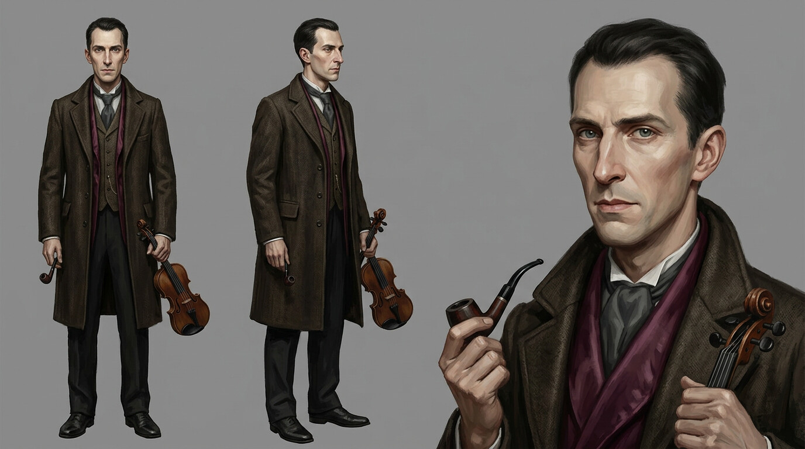
2 tries, 33.8 s wall, $0.136; final: yes
Try 1: fail Clothing colour and garments differ between full-length and close-up views; Props (pipe and violin) do not appear consistently across views; Close-up framing includes a violin and purple robe rather than a plain head-and-shoulders view Close-up shows a purple dressing-gown and violin, while the views show a dark tweed ulster with no visible plum robe in full-length views; clothing differs between views; Full-length views show a dark overcoat over a waistcoat, inconsistent with a single costume across views; Pipe appears only in one view and is held in hand, with violin only in close-up, so props differ between views views_ok=False same=False extra=False plain=True text=False frame=False
2. Dr. Watson — Watson, the narrator-companion · character · gemini-3.1-flash-image
Canon: Dr. Watson: man in his late thirties to forties, sturdy and solidly built with a comfortable, well-fed frame, having gained weight since marriage; fair to light-brown hair neatly parted, full drooping moustache, pleasant open face with kindly, steady eyes. Dresses as a respectable Victorian gentleman doctor in dark frock-coat or tweed suit, waistcoat, high collar and cravat; carries a physician's black bag and a walking stick, and often a revolver for dangerous nights.
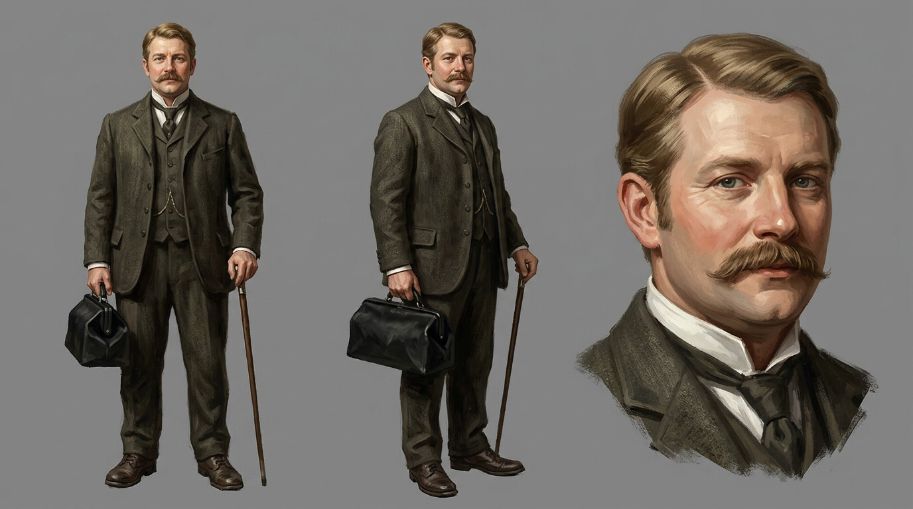
3 tries, 37.3 s wall, $0.203; final: NO (engine would run without a sheet and surface this)
Try 1: fail Build contradicts canon: figure reads slim, not sturdy and well-fed. Canon says solidly built with a comfortable, well-fed frame; figure appears slim rather than sturdy. views_ok=True same=True extra=False plain=True text=False frame=False
Try 2: fail Build does not match canon's sturdy, comfortable frame with added weight since marriage Subject appears to have a slim-to-average build rather than the sturdy, well-fed frame described in canon; Subject's hair appears light brown to fair as canon allows, but close-up shows a shorter, less clearly parted style than canon's neat parting views_ok=True same=True extra=False plain=True text=False frame=False
Try 3: fail Build contradicts canon: subject is slim, not sturdy and well-fed. Figure appears trim rather than sturdy and well-fed with a comfortable frame, contrary to canon build views_ok=True same=True extra=False plain=True text=False frame=False
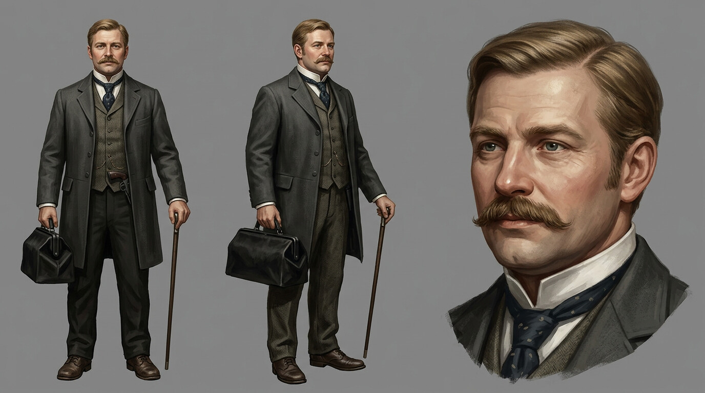
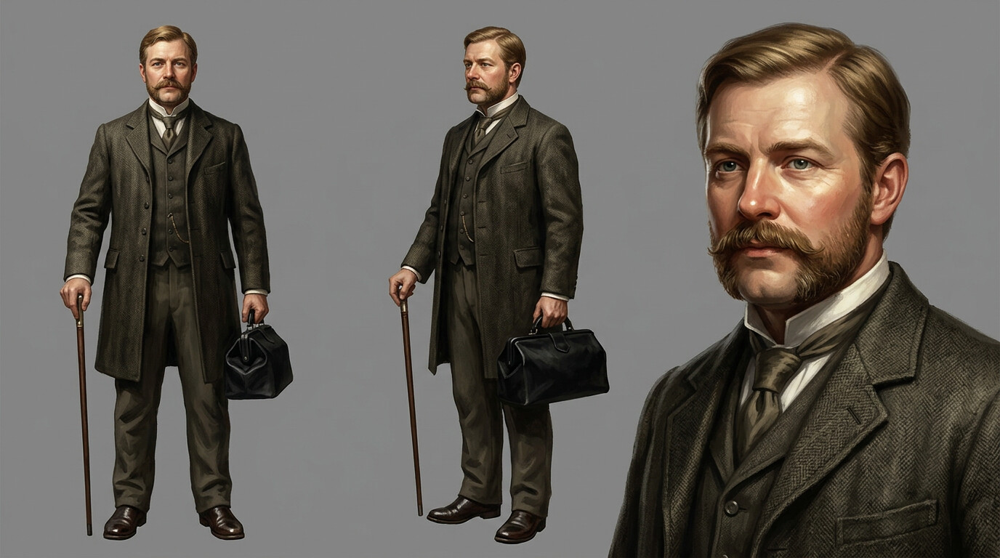
3. Lestrade — Lestrade · character · gemini-3.1-flash-image
Canon: Lestrade: a lean, wiry Scotland Yard inspector of about forty, with a ferret-like face, narrow sharp features and a sly, furtive cast to the eyes. Short, neatly brushed sandy-brown hair and a trim sandy moustache. Country dress: light brown dustcoat and leather leggings. Town dress: pea-jacket, cravat, and a black canvas bag in hand.
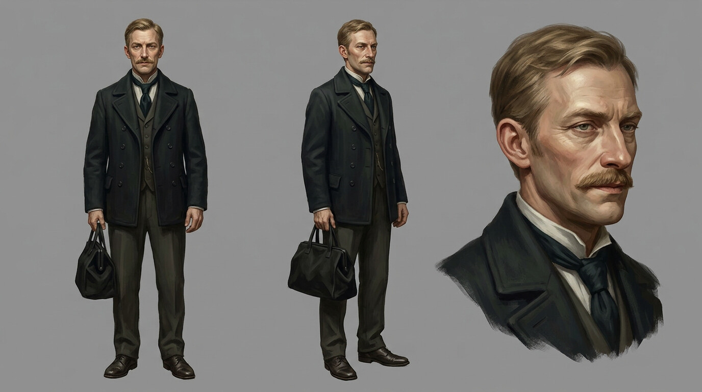
3 tries, 47.9 s wall, $0.204; final: NO (engine would run without a sheet and surface this)
Try 1: fail Subject does not match the lean, ferret-faced canon description; Hair and facial features diverge from canon; Second view is not a clear three-quarter angle Subject appears broader and more solid rather than lean and wiry; Face is fuller and less ferret-like, lacking the narrow sharp features and sly furtive eyes; Hair is a fuller, combed-back style rather than short neatly brushed; Town dress shown with a black canvas bag, but the dustcoat is worn over a dark waistcoat with pea-jacket style, not clearly a pea-jacket views_ok=False same=True extra=False plain=True text=False frame=False
Try 2: fail Subject's clothing colour changes between views (light brown dustcoat vs navy pea-jacket).; Facial features and hair colour do not match the canon's ferret-like, sandy-brown inspector.; Bag presence is inconsistent across views and an extra bag appears. Front and three-quarter views wear a light brown dustcoat, but the town view wears a dark navy pea-jacket, so the subject's clothing differs between views.; The bag is held in the three-quarter and town views but absent from the front view, and the second bag shadow in the three-quarter view suggests an extra bag.; Face and hair read as more youthful and rounder than a lean, wiry, ferret-like inspector of about forty with narrow sharp features and a sly, furtive gaze.; Hair is a fuller, lighter blond rather than short, neatly brushed sandy-brown, and the close-up eyes look open rather than sly and furtive.; Town dress shows a dark brown waistcoat and trousers that differ from the light brown country dress, which is acceptable, but the front view lacks the leather leggings, showing trousers tucked into boots instead. views_ok=True same=False extra=False plain=True text=False frame=False
Try 3: fail Face and build do not match the lean, wiry, ferret-like canon description.; Subject proportions and hair differ between full-length views and close-up, so views may not show the same subject.; Clothing does not match canon dress for the figure shown. Canon describes a lean, wiry man with a ferret-like face and sly, furtive eyes; the figures appear broader and more genial with a neutral, open expression.; Canon specifies light brown dustcoat and leather leggings for country dress, but the figure wears a dark pea-jacket, cravat and waistcoat with grey trousers.; Canon specifies a black canvas bag in hand, which is present, but the jacket and tie are in the town-dress style only while no country dress view is shown.; Hair in the close-up appears fuller and lighter than the short neatly brushed sandy-brown hair described, and the head size and proportions differ between the full-length views and the close-up.; Moustache appears in the close-up but the face in the full-length views looks rounder and less narrow than the canon ferret-like features. views_ok=False same=False extra=False plain=True text=False frame=False
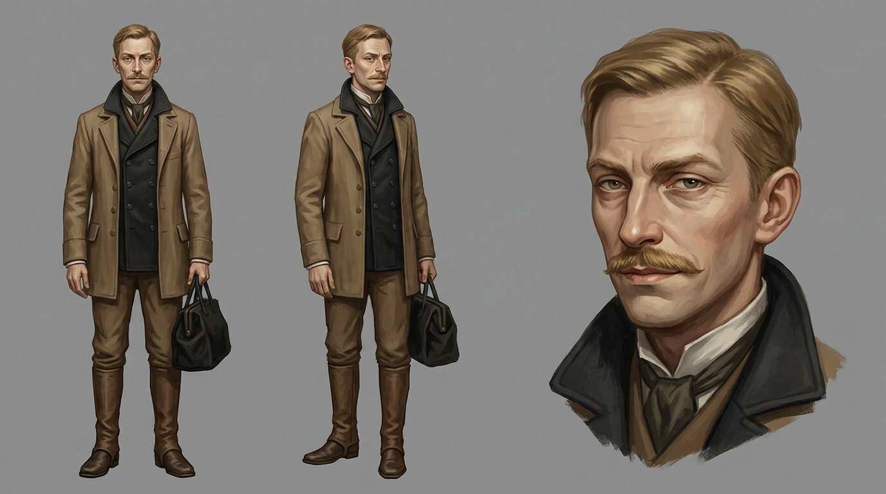
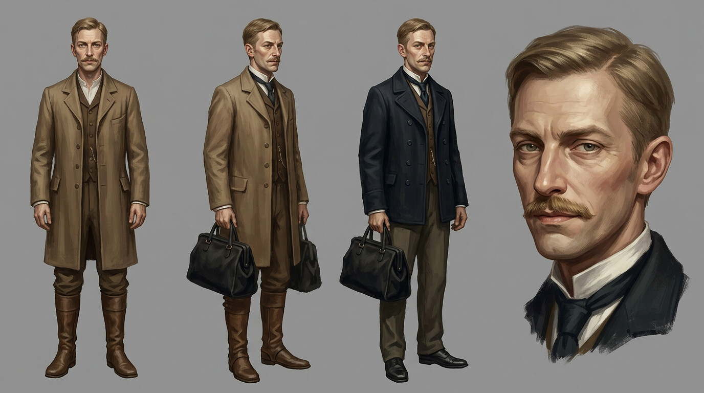
4. 221B Baker Street — Baker Street lodgings · location · gemini-3.1-flash-image
Canon: 221B Baker Street: first-floor sitting-room of a brick townhouse on a London street of dun-coloured brick houses; large bow-window onto the street; hearth with a coal fire and mantel; gaslit fittings; a sideboard and a table with white cloth; shelves of old books, chemical bottles and test-tubes; armchairs either side of the fire; violin and pipe on the mantelpiece; fog or snow outside.
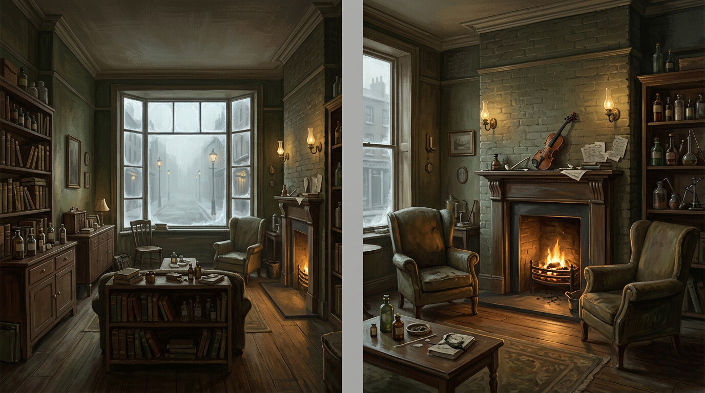
1 try, 13.9 s wall, $0.068; final: yes
Try 1: passTwo framed pictures and a wall plate appear on the walls, not in canon but not contradictory; Street visible through bow-window shows buildings rather than only dun-coloured brick houses, not clearly contradictory views_ok=True same=True extra=False plain=False text=False frame=False
5. Jesus — Jesus of Nazareth, adult teacher · character · gemini-3.1-flash-image
Canon: Jesus: man in his early thirties; lean, sturdy build of a Galilean labourer; olive-brown skin weathered by sun and travel; short dark-brown hair and a trimmed dark beard in the manner of a 1st-century Jewish man; kind, direct, grave face with dark eyes; plain undyed linen or wool tunic in earth tones with a dark-blue or white fringed tassel at the hem of his cloak as a Jewish man would wear; a simple wool mantle; no halo, no stereotyped blue robe; no crown except where the scene is the mockery.
3 tries, 40.1 s wall, $0.204; final: yes
Try 1: fail Head-and-shoulders close-up shows noticeably different hair and beard styling from the full-length views; Beard length and hair volume differ between views, which counts as a mismatch between views Tassel fringe is dark blue, which is acceptable per canon, but the cloak/mantle reads as a long open outer garment rather than a simple wool mantle; Figure appears in a shoulder-to-hem layout with the close-up showing a different hair length and fuller beard than the full-length views views_ok=False same=True extra=False plain=True text=False frame=False
Try 2: fail Clothing differs between views (grey robe in second view vs tan tunic and mantle elsewhere); Views do not consistently depict the same costume Second full-length view shows a grey robe and different clothing from the tan tunic and earth-tone mantle in the other views; Clothing colours differ between views, which the sheet must not show; Tassel colour is dark blue and appears on views that otherwise differ in garments views_ok=False same=False extra=False plain=True text=False frame=False
6. Simon Peter — Simon Peter, fisherman apostle · character · gemini-3.1-flash-image
Canon: Simon Peter: a sturdy Galilean fisherman in his thirties, weathered olive-brown skin, short dark curly hair and a full dark beard flecked with grey at the chin, broad calloused hands, a strong lined face. Wears a undyed linen tunic belted at the waist with a rough wool cloak in earth brown or faded blue-grey, bare or sandalled feet; carries a fisherman's net or a folded coat.
7. Moses — Moses, shepherd of Midian and prophet of the exodus · character · gemini-3.1-flash-image
Canon: Moses: man in his prime and then elder, aged 40 to 80 and beyond; lean, weathered build from desert shepherding; warm brown skin from sun; dark hair and a full dark beard, with some grey in later years; calm, grave face. Plain undyed woven wool robe with a simple linen belt, sandals; carries a shepherd's wooden staff, the rod of God. Dress is restrained and humble, never royal, though he was raised in Pharaoh's house.
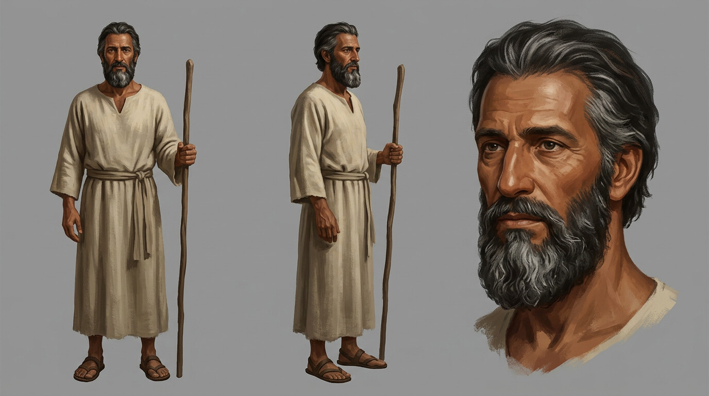
2 tries, 32.9 s wall, $0.136; final: yes
Try 1: fail Hair, beard and apparent age differ noticeably between the full-length views; Middle view's facial hair and hairline do not match the front view; Head-and-shoulders close-up shows a heavier, greyer beard and different face than the full-length figures Robe appears undyed off-white linen-like cloth, acceptable, but the middle figure's hair and beard appear greyer and differently styled than the front view; Hair and beard grey distribution differs between views, suggesting different apparent ages; Sandals and belt are present; staff is present in all full-length views views_ok=False same=False extra=False plain=True text=False frame=False
8. David — David as youth and shepherd · character · gemini-3.1-flash-image
Canon: David: a youth of about fifteen to eighteen, slight but wiry, with a ruddy, fair complexion and bright eyes. Thick dark-brown hair cut to shoulder length, a short fine beard or none. Simple undyed linen or wool woven tunic belted with a leather sash, sandals; shepherd's leather bag slung at the hip and a sling of plaited cord, with a few smooth river stones.
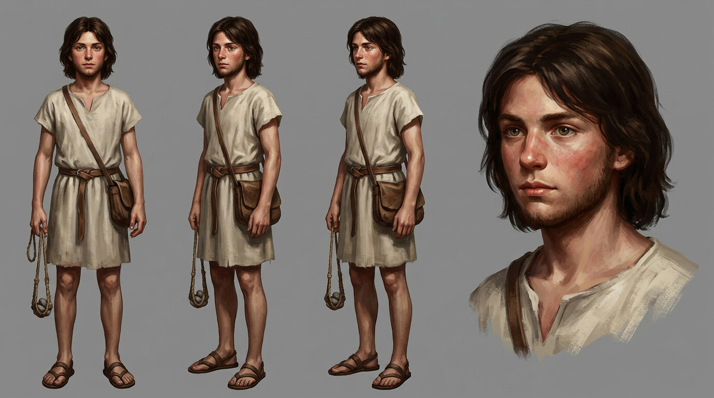
1 try, 14.2 s wall, $0.068; final: yes
Try 1: passFront view shows no beard while three-quarter view shows a short beard; close-up shows stubble-like beard, acceptable under 'a short fine beard or none' but beard varies between views; Tunic appears knee-length and belt/sash present; shoulder-length hair consistent; sling and stones present views_ok=True same=True extra=False plain=True text=False frame=False
9. David — David as warrior and later king · character · gemini-3.1-flash-image
Canon: David: a man of about thirty, broad-shouldered and lean from years in the wilderness, with a ruddy, weathered complexion and a close-trimmed dark beard. Dark hair kept short. Woven wool tunic and mantle in deep undyed brown or earth-red, a leather belt with a bronze-hilted sword; a royal mantle of blue-purple trimmed with gold may mark kingship. Sling and shepherd's bag still at his side.
10. Goliath — Goliath of Gath · character · gemini-3.1-flash-image
Canon: Goliath: a giant warrior of about nine feet, towering and broad-shouldered, mature adult in his prime, bronze-skinned Philistine man of the Late Bronze to early Iron Age, close-cropped dark hair and a full beard, heavy brow and fierce set face, bronze helmet and scale-armour coat of mail with bronze greaves, a large round shield borne by an attendant, and a spear and sword at his side.
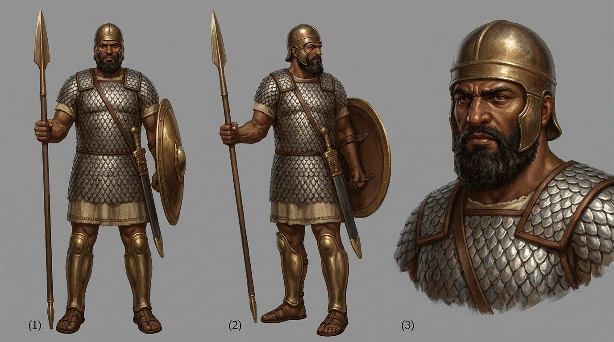
3 tries, 50.6 s wall, $0.204; final: NO (engine would run without a sheet and surface this)
Try 1: fail Canon specifies a large round shield borne by an attendant, which is absent from the sheet; Giant stature of about nine feet is not conveyed relative to the frame Figure appears about normal human height relative to frame rather than towering nine feet, though scale is hard to judge from views alone; No large round shield borne by an attendant is shown; Helmet is a crested bronze helmet with cheek guards rather than clearly the bronze helmet described; minor; Spear and sword are present, consistent with canon views_ok=True same=True extra=False plain=True text=False frame=False
Try 2: fail Extra figure (shield-bearing attendant) appears in the three-quarter view; Views show subject's clothing and scale-armour in slightly varying detail, and subject does not clearly read as a nine-foot giant A second figure (attendant) appears in the three-quarter view, which is a figure beyond the subject; Figure in the front view shows a spear held in hand, but the attendant's shield is included in the three-quarter view; attendant is an extra figure; Subject appears of ordinary human height relative to the grey background rather than clearly towering at about nine feet, though no scale reference is given views_ok=True same=False extra=True plain=True text=False frame=False
Try 3: fail Text labels (1), (2), (3) are present; Figure does not read as a nine-foot giant as the canon requires; Shield is carried by the subject rather than an attendant Numbered labels (1), (2), (3) appear on the sheet; Figure is not depicted as a towering nine-foot giant; scale is normal human; Large round shield is held by the figure himself rather than an attendant; Bronze-skinned Philistine look is not clearly conveyed as a towering warrior views_ok=False same=True extra=False plain=True text=True frame=False
Canon: Temple in Jerusalem: a vast Herodian complex on a raised stone platform atop Mount Moriah, white and golden limestone walls with great dressed stone blocks, colonnaded porticoes including Solomon's porch, a gilded gate and a veil-screened inner sanctuary, courts thronged with pilgrims, oil lamps, altar of burnt offering, olive trees and the Mount of Olives rising beyond the eastern wall.
12. The ark of the covenant — Sinai tabernacle ark · object · gemini-3.1-flash-image
Canon: ark of the covenant: a rectangular chest about two and a half cubits long and a cubit and a half wide and high, of acacia wood overlaid with pure gold; a gold mercy seat lies on its lid with two cherubim facing each other above it; gold rings at its four corners hold two long carrying poles that are never removed; set behind a woven veil in the tabernacle's inner chamber.
2 tries, 29.5 s wall, $0.136; final: yes
Try 1: fail Visible panel edges/frame around each view.; Background is not plain; curtains and wall are visible behind the object.; Cherubim are depicted as winged figures with faces, consistent with canon, so no mismatch there. Background contains draped curtains and a stone wall rather than a plain grey background, though the sheet itself is grey.; Each view is set on a separate panel with visible panel edges. views_ok=True same=True extra=False plain=False text=False frame=True
13. Sherlock Holmes — Sherlock Holmes · character · gemini-3.1-flash-lite-image
Canon: Sherlock Holmes: man in his thirties; lean, wiry build; pale, angular face with a sharp, hawk-like nose and keen grey eyes; clean-shaven; dark hair worn short and neat. Dressed in a tweed suit or dark frock-coat, a long ulster or a dressing-gown in dark red or plum; pipe and violin as signature props.
2 tries, 16.2 s wall, $0.068; final: yes
Try 1: fail Background is not plain even grey; cobblestone ground patch is present; Briefcase prop appears in full-length views and is not in the canon entry; Outerwear colour is dark brown, not the dark red or plum specified by canon Subject carries a briefcase, which is not a canon signature prop (canon lists pipe and violin); Dark brown coat and suit rather than tweed suit or dark frock-coat with dark red or plum dressing-gown or ulster; coat is dark brown, not plum or red; Cobblestone ground patch and textured background departs from the required plain even grey background views_ok=False same=True extra=False plain=False text=False frame=False
14. Dr. Watson — Watson, the narrator-companion · character · gemini-3.1-flash-lite-image
Canon: Dr. Watson: man in his late thirties to forties, sturdy and solidly built with a comfortable, well-fed frame, having gained weight since marriage; fair to light-brown hair neatly parted, full drooping moustache, pleasant open face with kindly, steady eyes. Dresses as a respectable Victorian gentleman doctor in dark frock-coat or tweed suit, waistcoat, high collar and cravat; carries a physician's black bag and a walking stick, and often a revolver for dangerous nights.
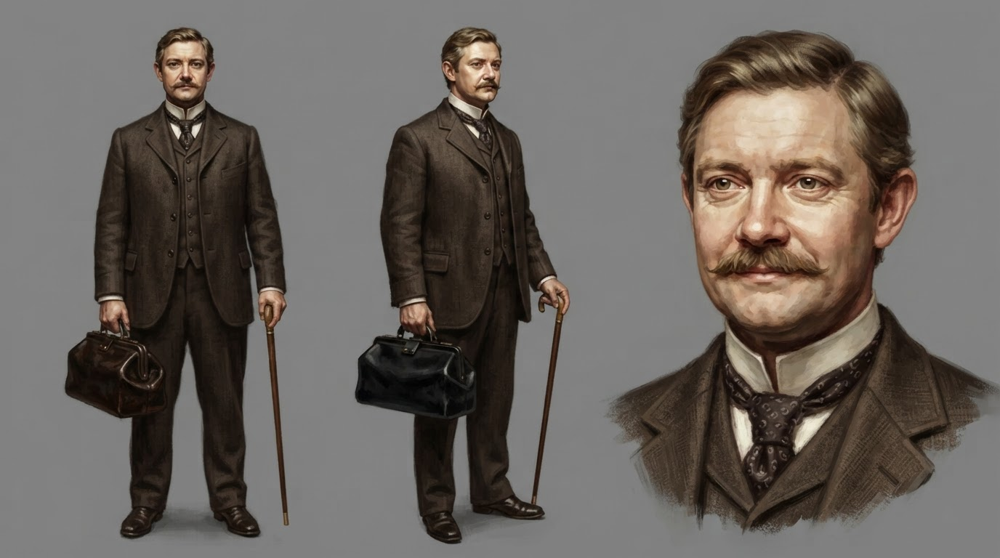
3 tries, 27.7 s wall, $0.102; final: NO (engine would run without a sheet and surface this)
Try 1: fail Build reads as slim rather than the sturdy, comfortable, well-fed frame specified in canon Figure appears lean rather than sturdy and well-fed, contrary to canon build; Hair appears light brown and neatly parted, consistent; moustache full and drooping, consistent views_ok=True same=True extra=False plain=True text=False frame=False
Try 2: fail Props differ between views: bag and stick are held in the front view but absent in the three-quarter view. Front view shows the figure carrying a black bag and walking stick, but the three-quarter view shows empty hands, which is a prop inconsistency between views. views_ok=True same=True extra=False plain=True text=False frame=False
Try 3: fail Bag colour differs between the front and three-quarter views (brown vs black); Subject build in full-length views does not match the sturdy, well-fed canon description; Minor but noticeable differences in facial features and moustache across views suggest inconsistent subject rendering Physician's bag is brown in the front view but black in the three-quarter view; Build appears lean rather than sturdy and well-fed in the full-length views; Hair and moustache vary in appearance between views, with the close-up showing a different hairline and moustache shape views_ok=False same=False extra=False plain=True text=False frame=False
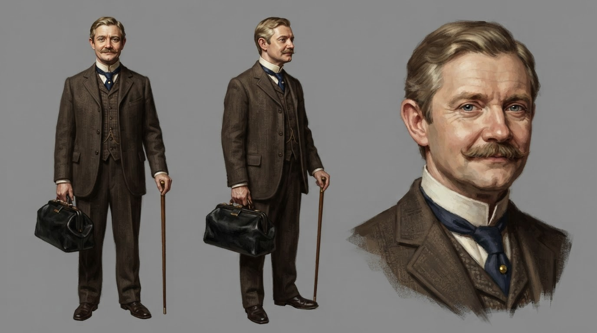
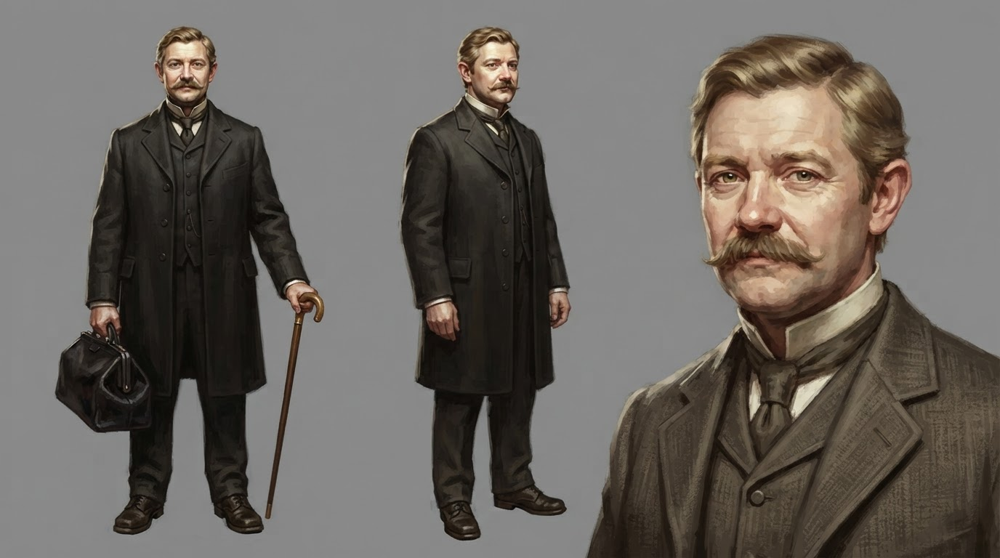
15. 221B Baker Street — Baker Street lodgings · location · gemini-3.1-flash-lite-image
Canon: 221B Baker Street: first-floor sitting-room of a brick townhouse on a London street of dun-coloured brick houses; large bow-window onto the street; hearth with a coal fire and mantel; gaslit fittings; a sideboard and a table with white cloth; shelves of old books, chemical bottles and test-tubes; armchairs either side of the fire; violin and pipe on the mantelpiece; fog or snow outside.
16. Jesus — Jesus of Nazareth, adult teacher · character · gemini-3.1-flash-lite-image
Canon: Jesus: man in his early thirties; lean, sturdy build of a Galilean labourer; olive-brown skin weathered by sun and travel; short dark-brown hair and a trimmed dark beard in the manner of a 1st-century Jewish man; kind, direct, grave face with dark eyes; plain undyed linen or wool tunic in earth tones with a dark-blue or white fringed tassel at the hem of his cloak as a Jewish man would wear; a simple wool mantle; no halo, no stereotyped blue robe; no crown except where the scene is the mockery.
17. David — David as youth and shepherd · character · gemini-3.1-flash-lite-image
Canon: David: a youth of about fifteen to eighteen, slight but wiry, with a ruddy, fair complexion and bright eyes. Thick dark-brown hair cut to shoulder length, a short fine beard or none. Simple undyed linen or wool woven tunic belted with a leather sash, sandals; shepherd's leather bag slung at the hip and a sling of plaited cord, with a few smooth river stones.
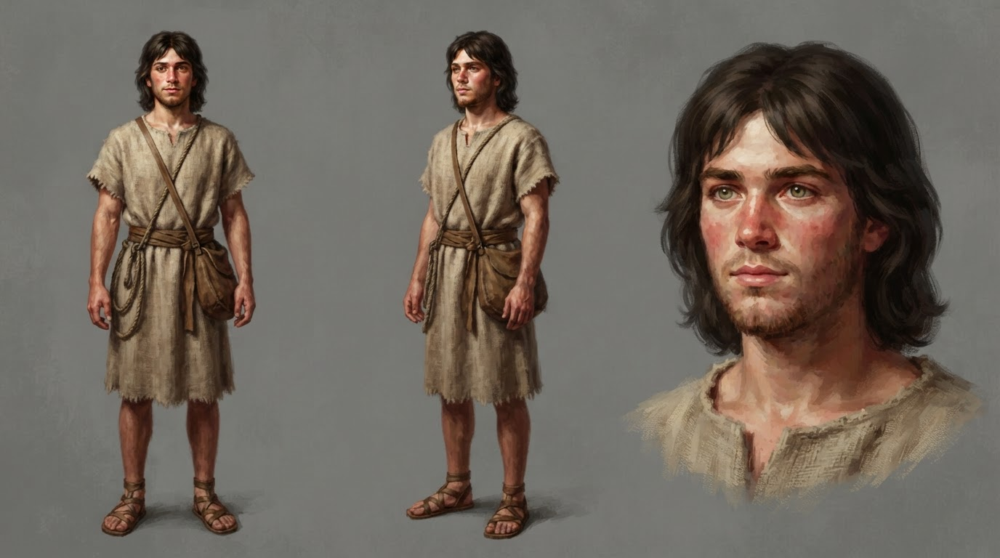
1 try, 7.7 s wall, $0.034; final: yes
Try 1: passSling of plaited cord and river stones are not clearly visible; only a cord loop hangs from the belt; Hair is shoulder-length dark brown, consistent; beard is short stubble, consistent views_ok=True same=True extra=False plain=True text=False frame=False
18. The ark of the covenant — Sinai tabernacle ark · object · gemini-3.1-flash-lite-image
Canon: ark of the covenant: a rectangular chest about two and a half cubits long and a cubit and a half wide and high, of acacia wood overlaid with pure gold; a gold mercy seat lies on its lid with two cherubim facing each other above it; gold rings at its four corners hold two long carrying poles that are never removed; set behind a woven veil in the tabernacle's inner chamber.
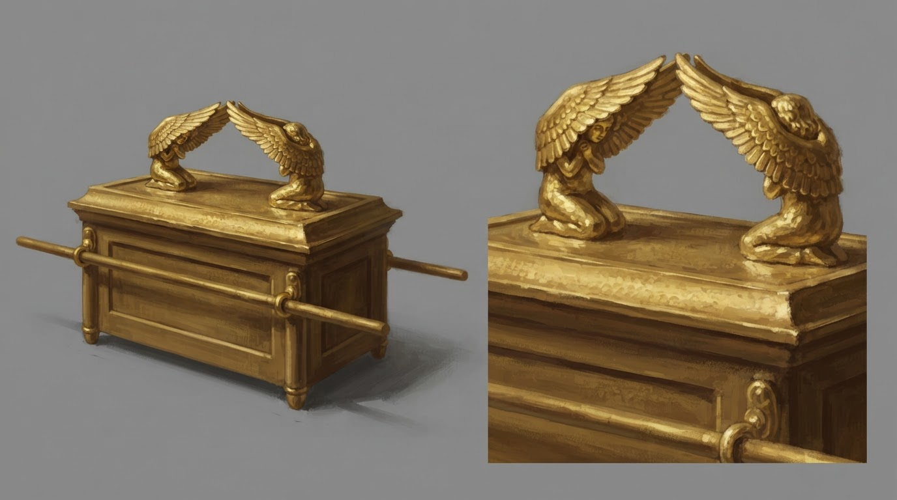
2 tries, 17.0 s wall, $0.068; final: yes
Try 1: fail Background is not plain even grey; patterned veil is present; Vertical divider line between the two views acts as a frame/panel edge; Detail view shows exposed wood rather than gold overlay, contradicting canon Background includes a woven veil with pomegranate pattern rather than being plain grey in the whole-object view; Wood is visible in the detail view where canon specifies gold overlay over acacia; detail shows exposed brown wood; Chest appears to have a visible vertical divide down the middle of the sheet acting as a panel edge views_ok=True same=True extra=False plain=False text=False frame=True
19. holmes--watercolour — main era: Victorian England, 1880s to early 1890s
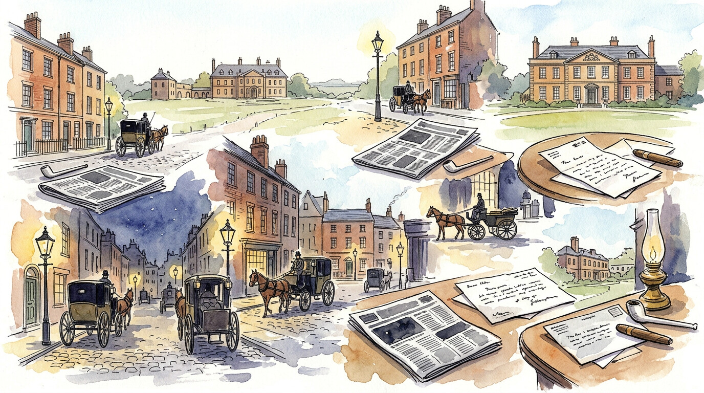
3 tries, 42.5 s, $0.203; final: NO
Try 1: fail Visible text: 'PRINTED NEWS' on the newspaper and handwritten text on the letter.; Horses present pulling the carriage (animals are not prohibited, noted for reference).; No people visible; no frame or border detected; scene reaches all four edges.
Try 2: fail Text present: handwritten/printed writing is visible on the telegram form at the lower right and on the newspaper.; Scene runs to all four edges with no frame, border, or vignette, so full-bleed and frame checks pass.
Try 3: fail Figures of people are visible on carriages and in the street scene (e.g., coachmen and passengers).; Horses are present pulling carriages.; Vignette-style dark and white edge margins and framing appear around the scene, with the watercolor fading into paper margins at the edges.; Handwritten text is visible on letters and papers on the tables.; The scene does not fully run to all four edges; the watercolor washes stop short with paper showing at the borders.
20. holmes--icon — main era: Victorian England, 1880s to early 1890s
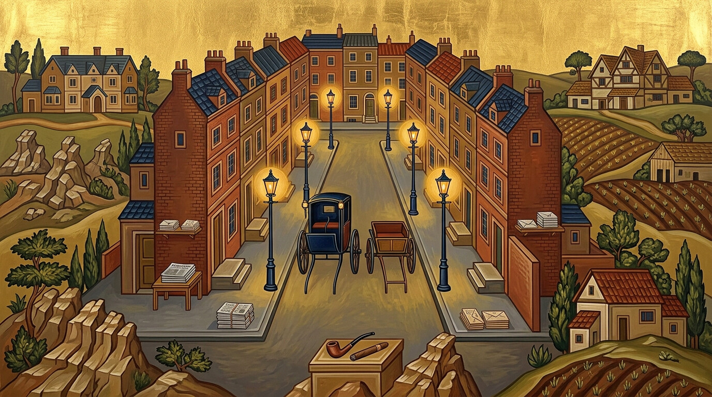
2 tries, 26.9 s, $0.135; final: yes
Try 1: fail A gold leaf border frames the scene on all sides, breaking the no-frame rule.; The scene does not run to all four edges because the gold margin surrounds the artwork.; Horses are visible pulling a carriage, which is not disallowed but noted.; No people or text are visibly present.
Try 2: pass
21. bible--watercolour — main era: First-century Roman Judea and Galilee
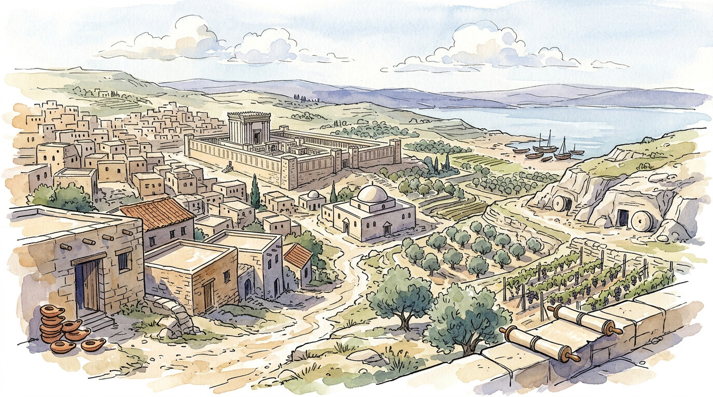
3 tries, 46.7 s, $0.203; final: yes
Try 1: fail A small robed figure is visible near the boats on the right, so people are present.; The painting has a white paper margin along the edges and does not run fully to all four edges.; Scroll writing or inscription marks on the rolled scroll in the foreground, suggesting text is present.
Try 2: fail Scene is a watercolor vignette that fades into white paper margins on all sides rather than running to all four edges; Visible paper margin/vignette border around the illustration; Scrolls in foreground display script-like markings that read as text
Try 3: pass No people visible in the scene.; No frame, border, vignette or margin; the artwork runs to all four edges.; No text or lettering present.; Scene reaches all four edges and corners.
22. bible--icon — main era: First-century Roman Judea and Galilee
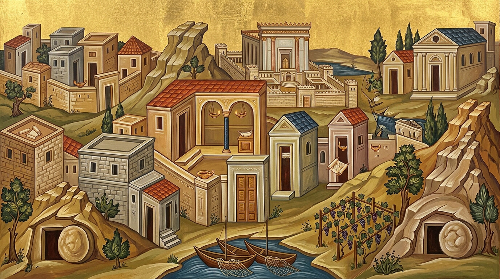
1 tries, 15.0 s, $0.068; final: yes
Try 1: pass
23. holmes--watercolour--v2 — main era: Victorian England, 1880s to early 1890s
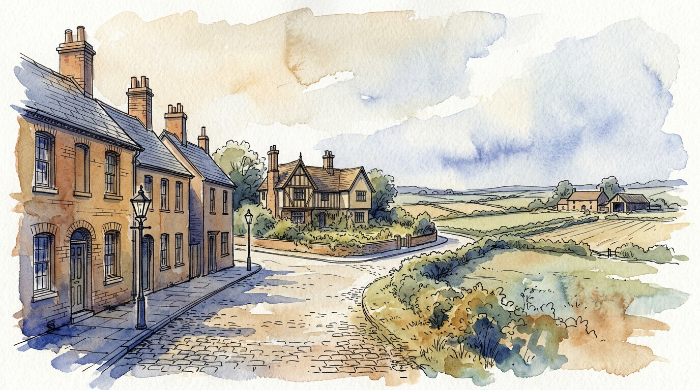
3 tries, 47.3 s, $0.203; final: NO
Try 1: fail The illustration does not reach all four edges: the watercolor wash fades into a white paper margin on the top and right and bottom edges, leaving unpainted paper border.; No people, animals, frame or text are visible, but the full-bleed requirement is broken.
Try 2: fail Watercolor vignette fades to white paper margins on the left, right and top edges, so the scene does not run to all four edges.; Visible unpainted paper border acts as a frame/margin.; Horses are present in the carriages, which is not prohibited but is noted.; No people or text visible.
Try 3: fail Watercolor vignette with unpainted white paper margins visible along the top, left, right and bottom edges, so the scene does not run to all four edges.; Soft faded edges act as a paper margin/vignette, which counts as a frame.; No people, animals or text are visible.
24. holmes--icon--v2 — main era: Victorian England, 1880s to early 1890s
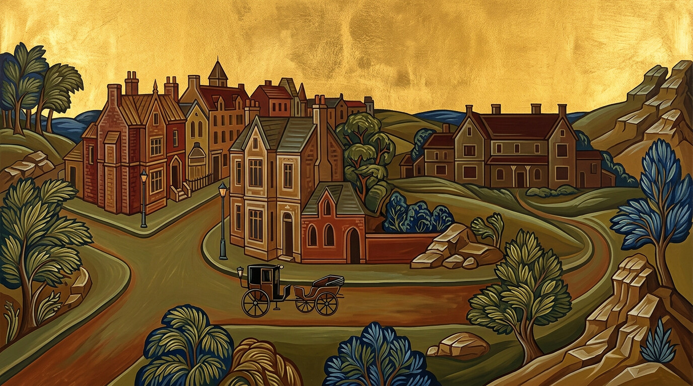
1 tries, 14.3 s, $0.068; final: yes
Try 1: pass
25. bible--watercolour--v2 — main era: First-century Roman Judea and Galilee
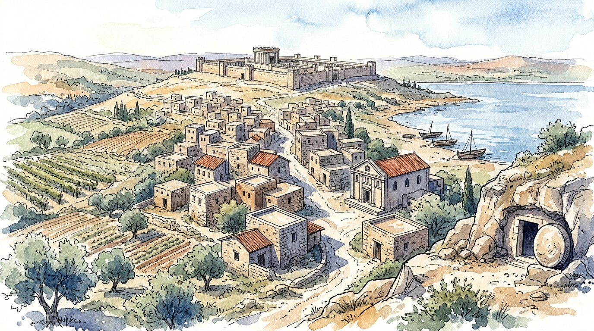
1 tries, 12.7 s, $0.068; final: yes
Try 1: pass No people visible in the scene.; No frame, border, vignette or margin; the painting runs to all four edges.; No text or lettering present.; Scene reaches all four edges and corners.